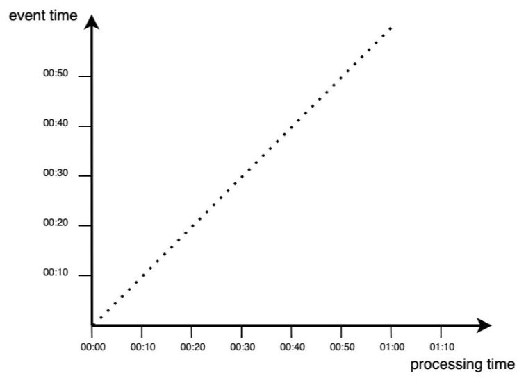
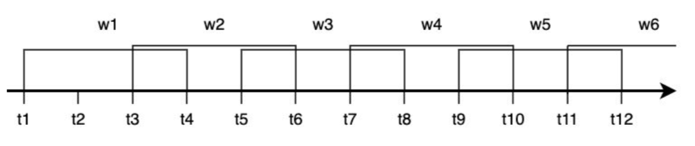

Lecture 3
⏳ Duration: 1.5h
🎯 Lecture Goal
Introducing students to the fundamentals of real-time analytics.
Data Streams
You might associate streaming with services that transmit video online. When you’re watching your favorite TV series (just like in class now), the streaming platform continuously delivers to you the next “chunks” of video.
A similar concept applies to streaming data. The chunks being transmitted don’t have to be in video format – it all depends on the business goal. For instance, continuous measurements from sensors in factories, power plants, or other monitoring systems.
The key here is that you’re dealing with a continuous stream of data that needs to be processed in real-time. You can’t wait for the production line to stop in order to conduct an analysis – any issues that arise should be logged immediately so that quick action can be taken.
Stream processing refers to the continuous processing and analysis of large sets of data in motion.
This can be compared to other aspects of Big Data. Batch processing is the opposite of stream processing – you first collect large amounts of data, and only then analyze them. Of course, you could download the entire video before watching it, but would that really make sense?
There are situations where a batch approach is sufficient, but you can already see that stream processing can offer additional business value that is difficult to achieve with traditional batch processing.
Real-Time Data Analytics vs. Event Stream Processing
It’s easy to confuse real-time analytics with stream analytics (or event stream processing). While stream analytics technologies enable real-time analysis, they are not the same thing!
Stream analytics involves processing data in motion, while real-time analytics refers to any data processing method where the delay is short enough to meet the business requirements for “real-time.”
Typically, real-time analytics systems are divided into hard and soft real-time systems: - Hard real-time systems (e.g., flight control systems) require strict adherence to deadlines – any delay could have catastrophic consequences. - Soft real-time systems (e.g., weather stations) can tolerate some delays, although in extreme cases, it could lead to data loss.
Moreover, while stream analytics assumes the presence of a dedicated streaming architecture, real-time analytics is not tied to any specific architecture.
The key point is that real-time analytics means processing data within the time period that a business defines as “real-time” – this can range from a few milliseconds to a few seconds, depending on business needs.
Data Sources for Streaming Data Include:
• Equipment sensors,
• Clickstreams,
• Location tracking,
• User interactions (e.g., user actions on your website),
• Social media channels,
• Stock market data,
• App activity,
• And more.
Companies use stream analytics to detect and interpret patterns, create visualizations, generate insights and alerts, and trigger processes in real-time or near-real-time.
Business Justification
Analytics helps identify significant patterns in data and discover new knowledge – both in streaming data and traditional analytics.
However, in today’s world, the nature of “finding meaningful patterns in data” has changed because the very nature of the data itself has changed. Its speed, volume, and variety have exploded.
Twitter generates over 500 million tweets daily, and according to IDC forecasts, by 2025, IoT devices will be able to generate 79.4 zettabytes (ZB) of data. This trend is accelerating.
Example Business Applications
- IoT Sensor Data and Anomaly Detection
- Stock Trading (Regression Problems) - Response time to changes and the timing of buying and selling stocks.
- Clickstream for Websites (Classification Problem) - Tracking and analyzing visitors on a website - Personalization of the site and content.
8 Best Examples of Real-Time Data Analytics
Business Applications
Definitions
Learn more about streaming data
Definition 1 – Event is anything that can be observed at a specific point in time. It is generated as a direct result of an action.
Definition 2 – In the context of data, an event is an immutable record in a data stream, encoded as JSON, XML, CSV, or in a binary format.
Definition 3 – A continuous event stream is an infinite set of individual events ordered over time, such as logs from devices.
Definition 4 – A data stream refers to data created incrementally over time, generated from static sources (e.g., database, file read lines) or dynamic sources (e.g., logs, sensors, functions).
A business is an organization that generates and responds to a continuous stream of events.
Stream Analytics
Stream Analytics (also called Event Stream Processing) refers to processing large amounts of data as they are generated, in real-time.
Regardless of the technology used, all data exists as a continuous stream of events, including: - User actions on websites,
- System logs,
- Sensor measurements.
Time in Real-Time Data Analysis
In batch processing, we analyze historical data, and the timing of the process is unrelated to when the events actually occurred.
In stream processing, there are two key concepts of time: 1. Event Time – the actual moment the event occurred. 2. Processing Time – the moment the system processes the event.
Ideal Data Processing
In an ideal scenario, processing happens immediately after the event occurs:

Real Data Processing
In reality, data processing always involves some delay, visible as points below the ideal processing line (below the diagonal in the chart):

In stream processing applications, the difference between event time and processing time is crucial. Common causes of delays include:
- Data transmission over the network,
- Lack of communication between the device and the network.
An example of this is tracking the location of a car via a GPS application – passing through a tunnel might cause temporary data loss.
Handling Delays in Stream Processing
Delays in event processing can be managed in two main ways: 1. Monitoring the number of missed events and triggering an alarm if the number of rejected events exceeds a threshold. 2. Applying correction using watermarking, which is an additional mechanism that accounts for delayed events.
The process of real-time event processing can be represented as a step function:

Not all events contribute to the analysis – some may be discarded due to excessive delays.
By using watermarking, additional time is allowed for the appearance of delayed events. This process includes all events above the dashed line. However, there might still be cases where some points are skipped.

The situations illustrated in the charts explicitly indicate why the concept of time is a critical factor and needs to be clearly defined at the business requirements level. Assigning timestamps to data (events) is a complex task.
Time Windows in Stream Analytics
In stream processing, time windows allow grouping data into time-limited segments, enabling event analysis within specific time intervals. Depending on the use case, various types of windows are applied, tailored to the characteristics of the data and analytical requirements.
1. Tumbling Window
A tumbling window is a fixed-length window that does not overlap – each event belongs to only one window.
✅ Characteristics:
- Fixed window length
- No overlap between windows
- Ideal for dividing data into equal time segments
📌 Example: Analyzing the number of orders in an online store every 5 minutes.

2. Sliding Window
A sliding window includes all events occurring within a specific time interval, where the window slides continuously.
✅ Characteristics:
- Each event can belong to multiple windows
- The window shifts by a specified interval
- Useful for detecting trends and anomalies
📌 Example: Tracking the average temperature over the last 10 minutes, updated every 2 minutes.

3. Hopping Window
A hopping window is similar to a tumbling window, but it allows overlapping windows, meaning one event can belong to multiple windows. It is used to smooth data.
✅ Characteristics:
- Fixed window length
- Overlapping windows
- Useful for noise reduction in data
📌 Example: Analyzing the number of website visitors every 10 minutes, but updated every 5 minutes to better capture trends.

4. Session Window
A session window groups events based on activity periods and closes after a specified period of inactivity.
✅ Characteristics:
- Dynamic window length
- Defined by user activity
- Used in user session analysis
📌 Example: Analyzing user sessions on a website – the session lasts as long as the user is active, but ends after 15 minutes of inactivity.
Summary
Different types of time windows are applied depending on the data’s characteristics and the analysis objectives. Choosing the right window impacts the accuracy of results and the efficiency of the analytical system.
| Window Type | Characteristics | Use Cases |
|---|---|---|
| Tumbling | Fixed length, no overlap | Periodic reports |
| Sliding | Fixed length, overlapping windows | Trend detection, anomaly detection |
| Hopping | Fixed length, partial overlap | Data smoothing |
| Session | Dynamic length, activity-dependent | User session analysis |
Each window type has its unique use cases and helps with better interpretation of streaming data. The choice of method depends on business needs and the nature of the analyzed data.
In stream data analysis, interpreting time is a complex issue due to: 1. Different systems having different clocks, leading to inconsistencies, 2. Data arriving with delays, requiring watermarking and time window techniques, 3. Different approaches to event time vs. processing time impacting result accuracy.
Microservices architecture
The concept of microservices is essential to understand when working on architectures. Although there are other ways to architecture software projects, microservices are famous for a good reason. They help teams be flexible and effective and help to keep software loose and structured.
The idea behind microservices is in the name: of software is represented as many small services that operate individually. When looking at the overall architecture, each of the microservices is inside a small black box with clearly defined inputs and outputs.
An often-chosen solution is to use Application Programming Interfaces ( API) to allow different microservices to communicate
Communication through API
A central component in microservice architectures is the use of APIs. An API is a part that allows you to connect two microservices. APIs are much like websites. Like a website, the server sends You the code that represents the website. Your internet browser then interprets this code and shows you a web page.
Let’s take a business case with the ML model as a service. Let’s assume you work for a company that sells apartments in Boston. We want to increase our sales and offer better quality services to our customers with a new mobile application which can be used even by 1 000 000 people simultaneously. We can realize this by serving a prediction of house value when the user requests for pricing over the web.
Serving a Model
- Training a good ML model is ONLY the first part: You do need to make your model available to your end-users You do this by either providing access to the model on your server.
- When serving ML Model You need: a model, an interpreter, input data.
- Important Metrics:
- Latency,
- Cost,
- Throughput (number of requests served per unit time)
Sharing data between two or more systems has always been a fundamental requirement of software development – DevOps vs MLOps.
When you call an API, the API will receive your request. The request triggers your code to be run on the server and generates a response sent back to you. If something goes wrong, you may not receive any reply or receive an error code as an HTTP status code.
Client-Server: Client (system A) requests to a URL hosted by system B, which returns a response. It’s identical to how a web browser works. A browser requests for a specific URL. The request is routed to a web server that returns an HTML (text) page.
Stateless: The client request should contain all the information necessary to respond.
You can call APIs with a lot of different tools. Sometimes, you can even use your web browser. Otherwise, tools such as CURL do the job on the command line. You can use tools such as Postman for calling APIs with the user interface.
All communication is covered in fixed rules and practices, which are called the HTTP protocol.
Request
- An Endpoint URL a domain, port, path, query string - http://mydomain:8000/getapi?&val1=43&val2=3
- The HTTP methods - GET, POST
- HTTP headers contain authentication information, cookies metadata - Content-Type: application/json, text … Accept: application/json, Authorization: Basic abase64string, Tokens etc
- Request body
The most common format for interaction between services is the JavaScript Object Notation format. it is a data type that very strongly resembles the dictionary format in Python - key-value object.
{
"RAD": 1,
"PTRATIO": 15.3, "INDUS": 2.31, "B": 396.9,
"ZN": 18,
"DIS": 4.09, "CRIM": 0.00632, "RM": 6.575, "AGE": 65.2, "CHAS": 0, "NOX": 0.538, "TAX": 296, "LSTAT": 4.98
}Response
- The response payload is defined in the response header:
200 OK
Content-Encoding: gzip
Content-Type: text/html; charset=utf-8
Date: Mon, 18 Jul 2016 16:06:00 GMT Server: Apache
Path=/;Header example: “Content-Type” => “application/json; charset=utf-8”, “Server” => “Genie/Julia/1.8.5
Body example:
{":input":{"RAD":1,"PTRATIO":15.3,"INDUS":2.31,.....}}, {":prediction":[29.919737211857683]}- HTTP status code: • 200 OK is used for successful requests, • 40X Access Denied • 50X Internal server error
REST API
The Representational State Transfer (REST) API works just like other APIs, but it follows a certain set of style rules that make it reconizable as a REST API: - Client-server architecture - Statelessnes - Cacheability - Layered system - Uniform Interface